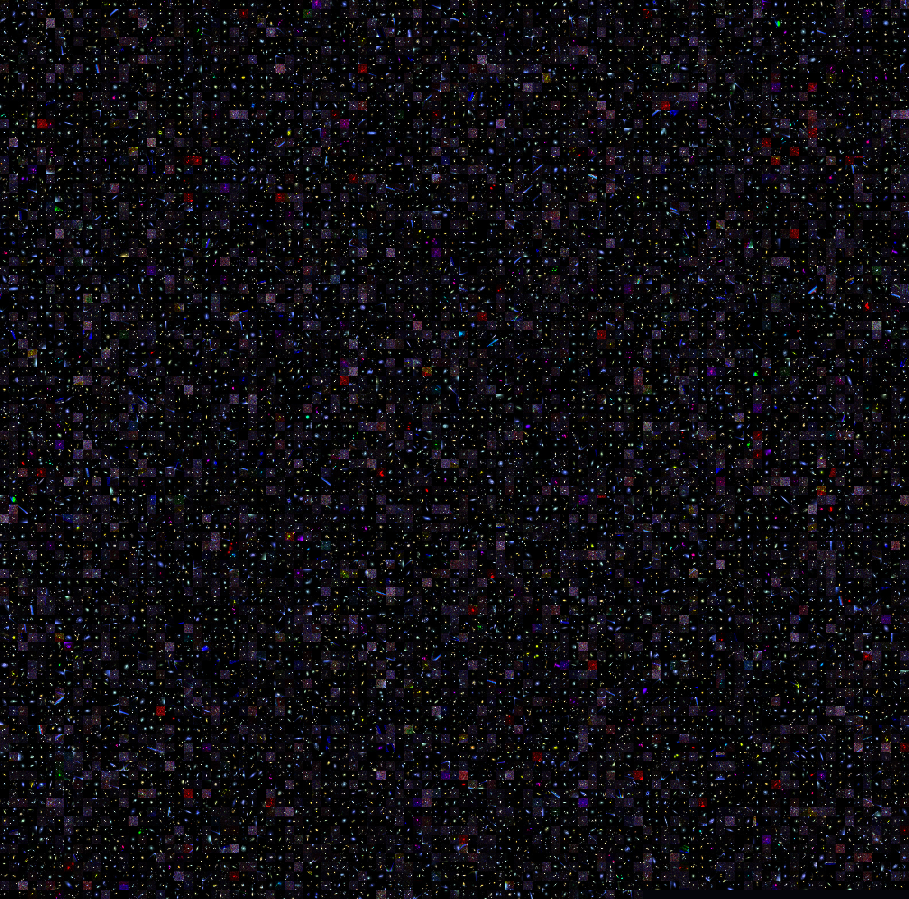

Pulling the faint and the hidden out of the James Webb deep sky.
Machine learning on JWST deep-field galaxies. A Vision Transformer learns what galaxies look like, runs live in your browser, and the road ahead leads to a self-supervised atlas you can fly through and an anomaly hunt for the mysterious Little Red Dots. Self-contained, no build step — the methods, in the open.
A ViT-Small in ONNX classifies a real JWST galaxy cutout in your browser — featured, smooth or merger (real Galaxy Zoo labels) — with attention heatmaps and honest, cross-validated metrics.
Open demo →
A self-supervised encoder (SimCLR) maps thousands of real JWST galaxies into a 2-D atlas you fly through — colour it by morphology and watch the encoder's own structure emerge.
Open demo →Score every galaxy by how unusual it is in latent space, and watch 216 real Little Red Dots (Kokorev+24) land where the encoder — with no labels — flagged the weird ones. Colour by anomaly in the atlas.
Open atlas →Spot galaxies at z > 10 as they vanish from the bluer filters — the "too many bright early galaxies" tension that has JWST rewriting galaxy formation.
PlannedLynceus sailed with the Argonauts and had the sharpest sight of any mortal — he could pick out a ship on the horizon, see through earth and water, and find what others missed. That is the whole task here: the faintest galaxies in James Webb's deepest images sit at the edge of the noise, and the most interesting objects are the ones that don't look like anything else. Lynceus learns to see them.